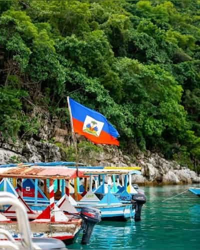

Daphcar Fortune
About Me
My name is Daphcar Fortune, and I am from Haiti. I am currently studying Software Development at BYU-Idaho through BYU-Pathway Worldwide. I enjoy learning new things, especially about technology and programming. I consider myself a kind, curious, and determined person. I enjoy helping others, growing in my faith, and discovering new opportunities. I also love nature, exploring beautiful places, and appreciating the beauty of the world around me.
My Country

Haiti is a beautiful country located in the Caribbean. It is known for its rich history, vibrant culture, beautiful landscapes, and strong traditions. Haiti became the first independent Black republic in the world on January 1, 1804, after a successful revolution against French colonial rule. Haitian Creole and French are its official languages. The country is also famous for its traditional music, art, delicious food, and warm hospitality. One of the most important symbols of Haiti is its independence, which represents courage, freedom, and resilience.